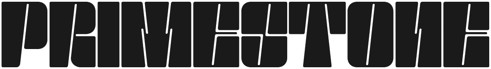
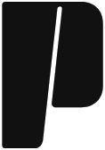
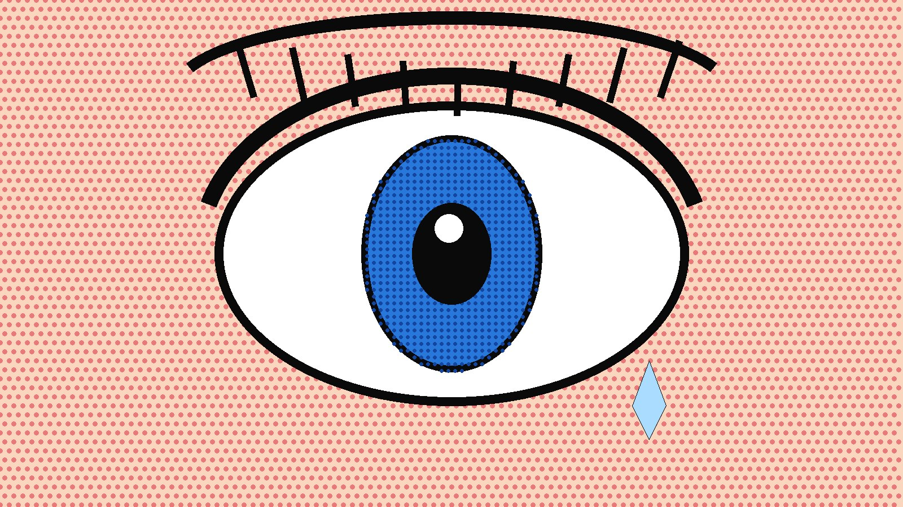
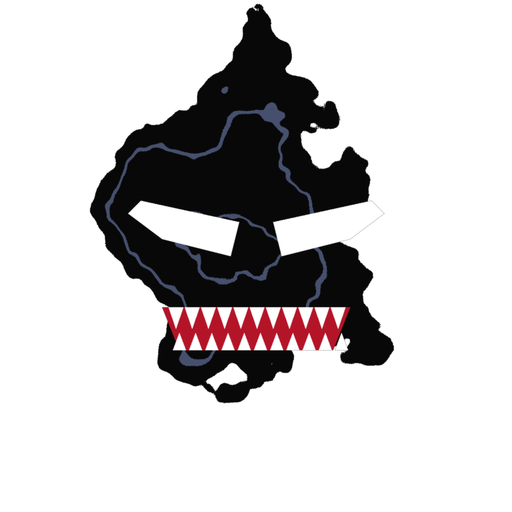
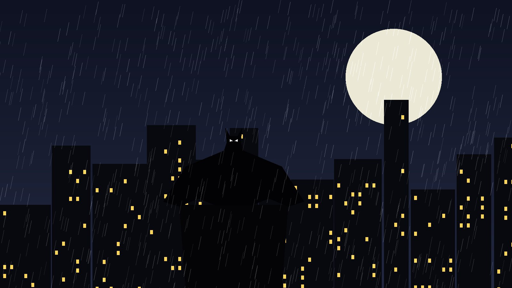
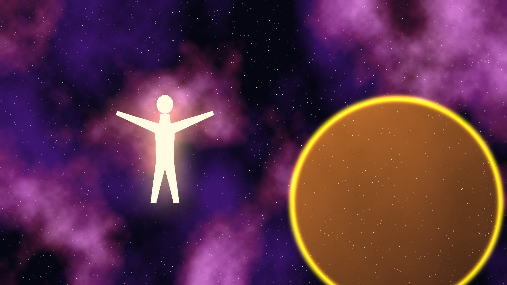
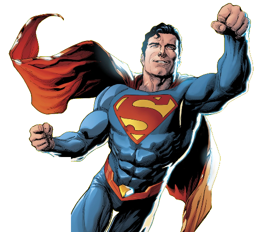

Un seul langage pour toutes les images : Signal attire le regard sur YouTube, Kiosque installe la voix du magazine partout ailleurs.
Le langage propriétaire
Les illustrations changeront d'éditeur, d'époque et de style à chaque vidéo. Ce qui doit rester identique, c'est le « cadre Primestone » autour d'elles : huit constantes. Une miniature ou un visuel en respecte au moins cinq ; le jaune, le sceau et la typographie sont obligatoires.
Traitement des illustrations
- On ne repeint jamais une illustration. Seules deux familles la transforment : Histoire (bichromie noir/jaune) et Théorie (désaturation partielle).
- Détourage si le personnage est l'objet ; case-cadre si l'œuvre (couverture, planche) est l'objet.
- Pas d'effets ajoutés : pas de lueur, de flamme, de flou de mouvement. Le dessin original suffit.
- Résolution minimale de la source : 1500 px sur le petit côté.
Système typographique (gratuit, Google Fonts)
Le logotype reste un dessin à part : aucune police ne l'imite.
Déclinaisons et règles




Zone de protection et tailles minimales
xx = ½ hauteur du logotype- Logotype : 120 px de large minimum à l'écran, 30 mm en impression. En dessous, utiliser le sceau P.
- Sceau P : 24 px minimum (favicon 32 px).
- Ratio figé 7,3 : 1, exporté depuis vos fichiers d'origine. Vos sources vectorielles restent la référence.
Interdits
Huit familles, une grille

Règles communes
- Format 1280 × 720, marge de sécurité 4,5 % (58 px) sur les quatre côtés.
- Rubrique en haut à gauche, sceau en bas à gauche : ces deux points ne bougent jamais.
- Coin bas droit (15 % × 11 %) laissé libre : YouTube y affiche la durée.
- Titre : trois mots maximum, deux lignes, hauteur de capitale d'au moins 12 % de l'image. Il doit rester lisible à 168 px de large.
- Une seule source de contraste dominante : jaune/noir, ou image sombre + titre jaune.
- Personnage : au moins 45 % de la hauteur, regard ou geste vers le titre.
- Crédit artiste vertical au bord droit (lu dans l'agrandissement, pas en vignette).
Art : crédit artiste · DC- Fond jaune plein, personnage détouré à droite, titre-concept à gauche.
estimé ?

- Fond noir, la couverture en case-cadre inclinée, ombre portée jaune. L'œuvre est montrée entière.

- Pastille rouge réservée à l'actu, éditeur en haut à droite, bandeau noir de titre.

Théorie- Image plein cadre assombrie, titre jaune en question, point d'interrogation géant.

3- Trois couvertures numérotées en escalier : l'ordre de lecture se comprend sans texte.

Événement- Deux univers séparés par l'incision à 8°. Le titre chevauche la frontière.
- Bichromie noir/jaune, année géante en fond. La seule famille qui recolore l'image.
- Décor plein cadre, dégradé noir à gauche pour le texte, jaune utilisé comme lumière.
Test smartphone · taille réelle dans l'application YouTube
Les vignettes de 168 px correspondent aux suggestions ; celle de 360 px au fil d'accueil mobile. Les huit familles restent lisibles et identifiables à la plus petite taille.
Trois carrousels
#ECEBE6, masthead (logotype + n° + rubrique) en haut, titres en serif italique, jaune en surligneur, images en case-cadre, pagination mono en bas à droite. Format 1080 × 1350.Guide de lecture · présentation de comics
- Auteurs
- Frank Miller, David Mazzucchelli
- Parution
- Batman #404–407
- Niveau
- débutant
- Auteurs
- Scott Snyder, Greg Capullo
- Parution
- Batman #1–11 (2011–2012)
- Niveau
- intermédiaire
- Gabarit réutilisable : la diapo « présentation de comic » sert aussi aux critiques et aux sélections.
- Couverture toujours à gauche, fiche technique à droite, accroche de deux lignes en bas.
Dossier historique
Jerry Siegel et Joe Shuster cèdent à l'éditeur les droits de Superman avec leur première histoire. Action Comics #1 sort en kiosque : le super-héros moderne est né.
- Alternance papier, jaune et noir pour rythmer le défilement.
- Une diapo « chiffre clé » par dossier : c'est elle qu'on partage en story.
Publication d'actualité
- 1Une nouvelle série mensuelle est annoncée pour le printemps.
- 2L'équipe créative sera dévoilée à la convention de New York.
- 3Aucune date de parution en France pour l'instant.
03/03- L'actu commence en Signal (accroche) et finit en Kiosque (faits, avis) : c'est le passage du flux au média.
- Rouge strictement réservé à l'actualité.
Deux fiches personnages
- Première apparition
- Action Comics #1 (juin 1938)
- Créateurs
- Jerry Siegel, Joe Shuster
- Origine
- Krypton, élevé à Smallville
- Première apparition
- The Amazing Spider-Man #300 (1988)
- Créateurs
- David Michelinie, Todd McFarlane
- Origine
- Symbiote extraterrestre (Secret Wars, 1984)
- Gabarit fixe : image en case jaune (ou noire pour les personnages sombres), nom en Anton, identité civile en serif, trois données, trois lectures.
- La fiche est numérotée : elle devient une collection que l'audience peut suivre et sauvegarder.
- Déclinable en 16:9 pour les vidéos (même structure, colonnes côte à côte).
Deux infographies
Règles des infographies
- Une idée par infographie, posée en titre serif sous forme de phrase.
- Barres et blocs toujours à l'échelle ; les barres prennent le biseau de l'incision (8°).
- Couleurs de données : noir, puis jaune, puis trois tons papier chauds. Jamais plus de cinq.
- Source obligatoire en bas à gauche, en mono.
- Export natif 16:9 (vidéo, site) et découpage en diapos 4:5 pour Instagram.
Deux habillages vidéo
Le logo ne bouge pas et ne se déforme pas : une barre jaune inclinée à 8° balaie l'écran et le révèle. La même barre sert de transition entre deux séquences. Les deux reposent sur un calque de forme et un cache, faisables en une heure dans After Effects.
Proposition 1 · Habillage « Analyse »
Proposition 2 · Habillage « Interview »
Règles audiovisuelles
- Toute animation suit une seule courbe (accélération forte, arrivée douce) et dure entre 8 et 15 images.
- L'incision à 8° est le seul mouvement de forme : entrée des bandeaux, transitions, chapitres.
- Filigrane P en haut à droite pendant toute la vidéo, sauf pendant les plans de planches en plein écran.
- Musique : un « sting » de 3 s pour l'intro et les chapitres, toujours le même.
Production en solo avec Creative Cloud
| Élément | Outil | Méthode | Livré en | Temps par vidéo |
|---|---|---|---|---|
| Animation du logo, intro | After Effects | Calque de forme incliné + cache alpha, une fois pour toutes | ProRes 4444 avec alpha | 0 (réutilisé) |
| Lower thirds, sources, chapitres, questions | After Effects → Premiere | Modèles d'animation (.mogrt) avec champs texte modifiables dans Premiere | .mogrt | 2 min |
| Transition coupe incisée | After Effects | Clip de 12 images posé sur la piste supérieure | ProRes 4444 avec alpha | 0 (glisser-déposer) |
| Filigrane P | Premiere | PNG sur piste fixe, opacité 85 % | PNG | 0 |
| Outro | After Effects | Modèle de 20 s avec emplacements pour l'écran de fin YouTube | .mogrt + MP4 | 1 min |
| Miniatures | Photoshop | Un fichier par famille, objets dynamiques pour l'image, calques verrouillés | .psd | 15–20 min |
Page d'accueil éditoriale
À la uneAnalysesActusGuidesHistoireCosmiqueRechercherLe Multivers expliqué sans se perdre
Terres parallèles, crises et redémarrages : soixante ans d'univers multiples chez Marvel et DC, en un seul dossier.
Lire le dossier- Le site est en Kiosque (papier, serif), les miniatures Signal y entrent telles quelles : la cohérence se fait par le jaune et le sceau.
- Navigation = rubriques des miniatures. Une vidéo, un article et une fiche partagent la même rubrique et le même N°.
À valider
- Les huit constantes du langage propriétaire, et la règle « cinq sur huit, dont jaune, sceau et typographie ».
- Les huit familles de miniatures : lesquelles gardez-vous telles quelles, lesquelles faut-il retravailler ?
- Le partage Signal / Kiosque : Signal pour YouTube et les accroches, Kiosque pour carrousels, fiches, infographies et site.
- Le rouge réservé à l'actualité : d'accord pour cette seule couleur supplémentaire ?
- L'habillage vidéo : animation par balayage incliné, sans déformer le logo.
- Les vraies images : envoyez 5 ou 6 illustrations de styles différents pour un dernier test avant production.
Après validation : fichiers Photoshop des huit familles, modèles Illustrator des formats Kiosque, projets After Effects et .mogrt, export SVG/PNG des déclinaisons du logo, arborescence de ressources et brand book PDF.